10 部片单 · 恐怖 / 科幻 / 惊悚 / 悬疑 / 剧情
| # | 片名 | 类型 | 评分 / 状态 |
|---|---|---|---|
| 01 | 阿凡达 | 科幻 / 冒险（美国 · 一双蓝脚印） | 8.8 / 81% / 83 |
| 02 | 创：战纪 | 科幻 / 动作（美国 · 一个被复制的父亲） | 7.2 / 51% / 49 |
| 03 | 少年派的奇幻漂流 | 剧情 / 冒险（美国 / 中国台湾 · 一只假的老虎比真的更真） | 9.1 / 87% / 79 |
| 04 | 环太平洋 | 科幻 / 动作（美国 · 为了打怪，我们造了怪） | 7.6 / 72% / 65 |
| 05 | 地心引力 | 科幻 / 惊悚（美国 / 英国 · 无重力里的一手一脚） | 8.0 / 96% / 96 |
| 06 | 奇幻森林 | 冒险 / 剧情（美国 · 只有男孩是真的） | 7.9 / 95% / 77 |
| 07 | 头号玩家 | 科幻 / 动作（美国 · 所有人的童年被折成一局游戏） | 8.7 / 72% / 64 |
| 08 | 流浪地球 | 科幻 / 灾难（中国 · 带走整个地球的那一次尝试） | 7.9 / 70% / 57 |
| 09 | 阿丽塔：战斗天使 | 科幻 / 动作（美国 / 加拿大 · 一双比人大十倍的眼睛） | 7.6 / 59% / 53 |
| 10 | 1917 | 战争 / 惊悚（英国 / 美国 · 一步剪辑都不能有） | 8.5 / 89% / 78 |
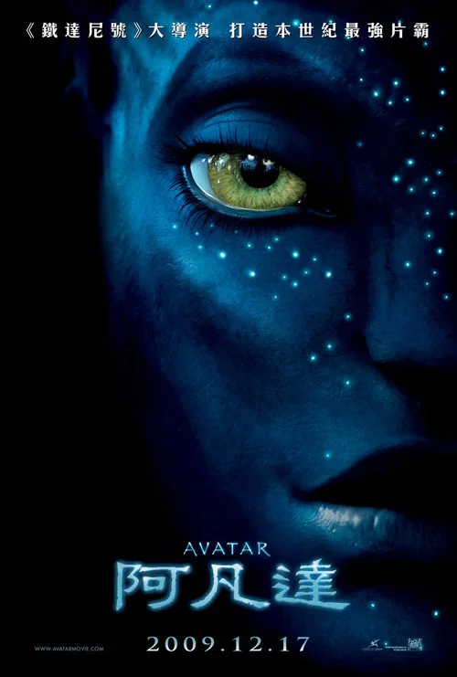
阿凡达 Avatar
「我看见你了。」
剧情梗概
2154 年，双腿瘫痪的前海军陆战队员杰克·萨利顶替死去的孪生哥哥，去潘多拉星参与「阿凡达」计划——把人类意识接进一具有纳美人外形的躯体。一次意外让他被部落接纳，学会了骑马、飞行，以及那个世界里所有生命彼此相连的方式。地面上的人类企业要的是树下面的矿，而那棵树，正是纳美人世世代代住的地方。
亮点
- 詹姆斯·卡梅隆早在 1994 年就写完了这份故事的提纲（约八十页），等了十四年才开机——他的理由一直是「技术还不够」。
- 预算 2.37 亿美元，全球票房约 29 亿美元；中国内地 2010-01-04 公映，很多人第一次为一部 IMAX 3D 排了通宵的队。
- 第 82 届奥斯卡九项提名，拿下最佳艺术指导、最佳摄影、最佳视觉效果三项。
- 剧组自研 Fusion Camera System 双镜头 3D 摄影机；另一项叫 Simulcam 的技术，让导演在现场就能看到 CG 角色叠进真实取景里。
- 性能捕捉最细的地方不在奇观，在脸：全片大量近景完全依赖演员本人的表情，卡梅隆坚持先看表演、再看特效。
- 豆瓣 8.8 / IMDb 7.9 / 烂番茄 81% / Metacritic 83：口碑相当一致，最常见的批评是「故事其实是个老故事」。
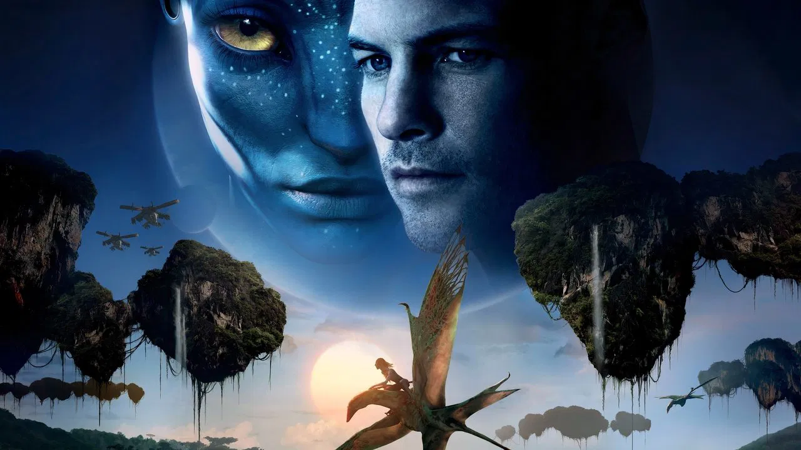
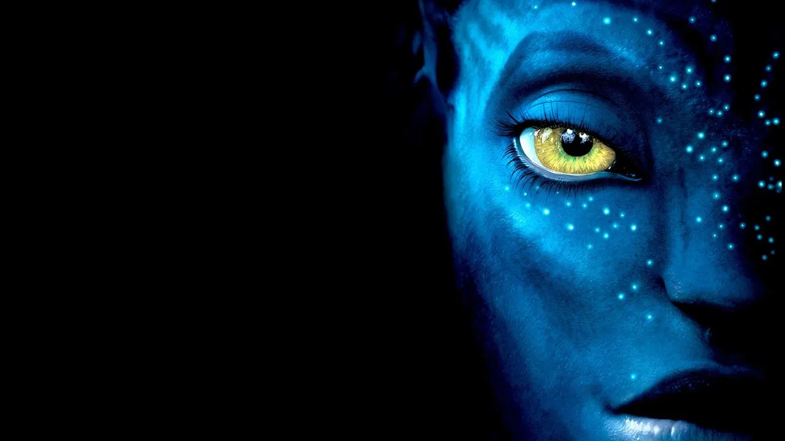
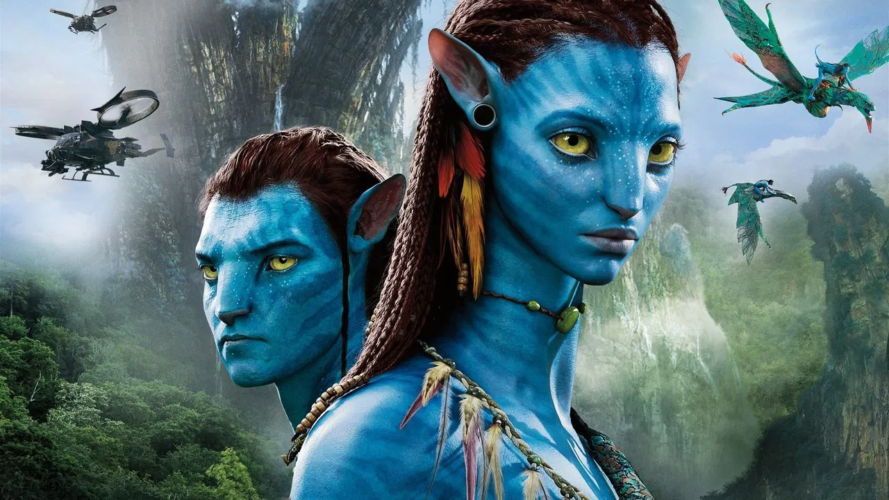
导演与主创 · 他们的历史作品
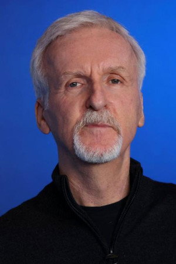
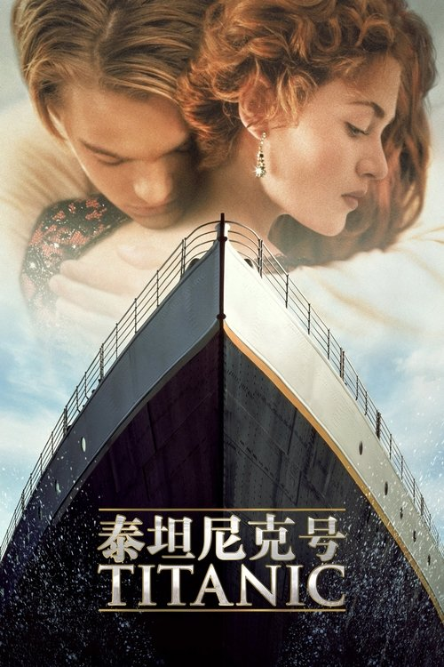
泰坦尼克号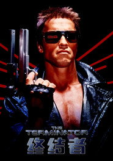
终结者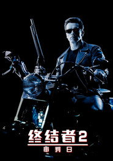
终结者2：审判日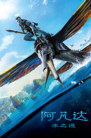
阿凡达：水之道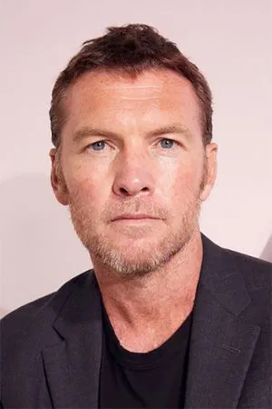
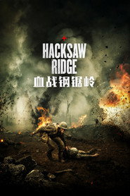
血战钢锯岭 诸神之战
诸神之战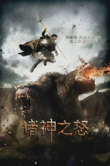
诸神之怒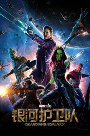
银河护卫队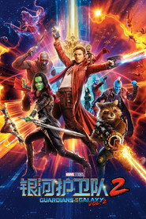
银河护卫队2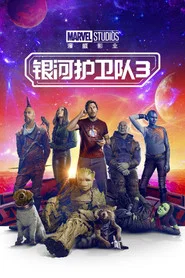
银河护卫队3短评（轻微剧透）
轻微剧透：真正的转折在杰克决定主动去驯服那只魅影之前——他把「人类的身份」当成一件可以随时放下的行李交了出去。卡梅隆很清楚自己重拍的是哪一出（走进原住民、最后选择留下来的那个人），所以他把全部力气放在另一件事上：**让你相信那个世界值得为它打仗**。轻微剧透：结尾被赶出人类的门、转身走进树林，镜头在你已经知道答案之后还往前推了很久。剧作确实老，但只要「种子落在枪口上」那一刻你还在心动，这片的目的就达到了。
为什么值得一看
想看懂「当年的大场面」到底指什么的人；愿意为一套世界观暂缓对剧情创新的期待的观众。162 分钟，强烈建议大屏 / 3D 版本。战斗与死亡场面较多但血腥度低，儿童观看基本无碍。内地 2010 年公映过，流媒体亦有高清版本。看完想继续：《阿凡达：水之道》《潘神的迷宫》《幽灵公主》。
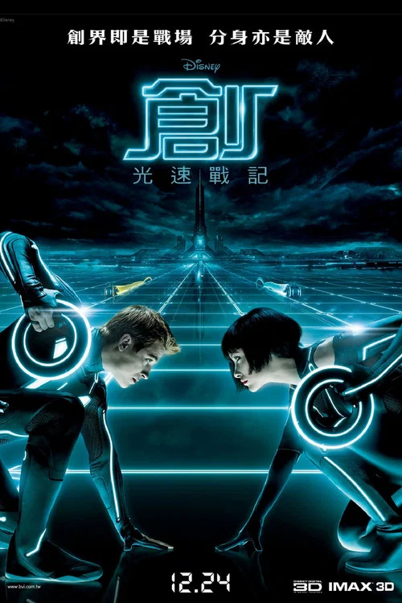
创：战纪 Tron: Legacy
「游戏已经开始了。」
剧情梗概
1989 年，ENCOM 的天才程序员凯文·弗林在一次演示后人间蒸发。二十年后，他的儿子山姆收到一条来自父亲废弃机房的传呼，进去之后被拉进了父亲设计的那个世界——网格。掌管那里的是父亲的另一个版本克鲁，它在追求一件它自己都说不清的「完美」，而完美的前提是所有人步调一致。
亮点
- 约瑟夫·科辛斯基的长片处女作，此前他是广告导演；本片是 1982 年《电子世界争霸战》的正统续篇。
- 杰夫·布里吉斯一人分饰父亲与它的对立面——年轻版的克鲁（CLU）由数字减龄技术生成，当年正好踩在「像」与「不像」的那条线上。
- 预算 1.7 亿美元，全球票房约 4.09 亿美元。
- 配乐由 Daft Punk 制作，是全片评价最没有争议的部分。
- 第 83 届奥斯卡最佳音效剪辑提名。
- 豆瓣 7.2 / IMDb 6.8，烂番茄只有 51%、Metacritic 49：本期口碑最低的一部，但它的视听在今天看依然超前。
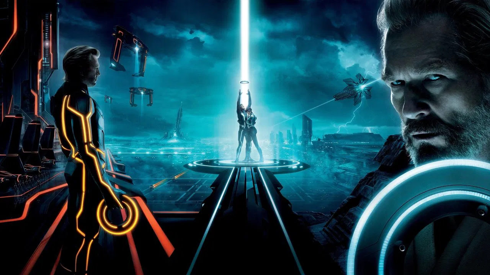
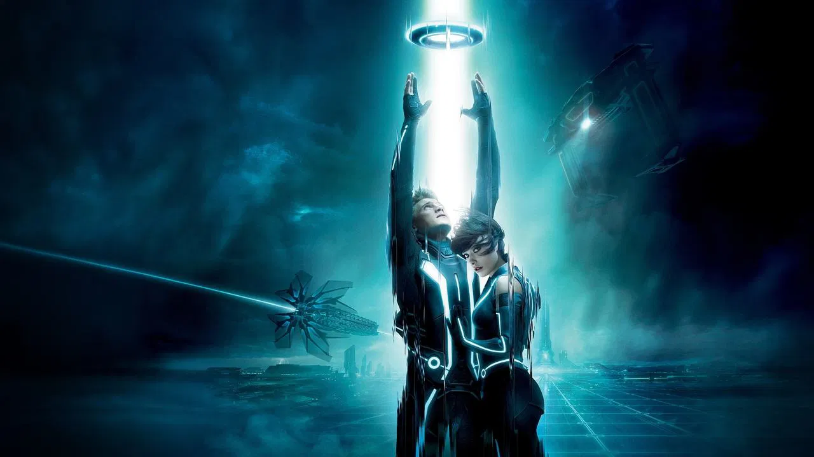
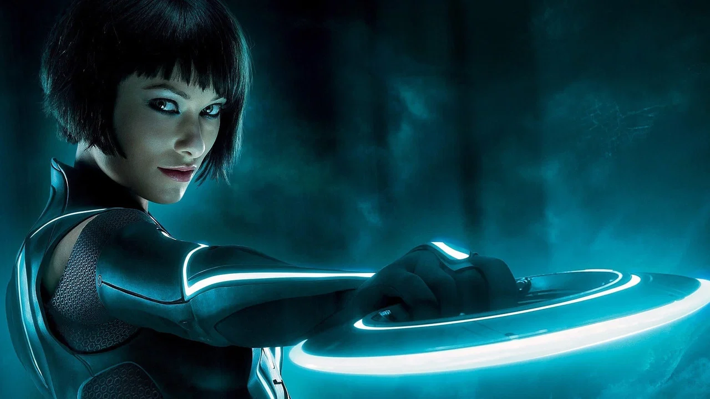
导演与主创 · 他们的历史作品
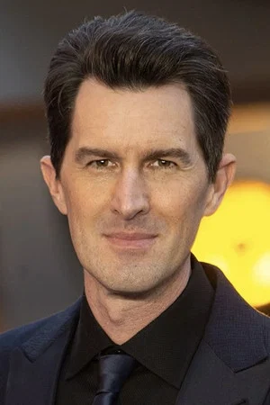
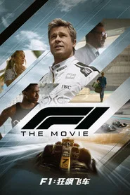
F1：狂飙飞车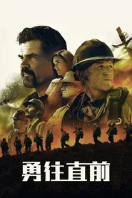
勇往直前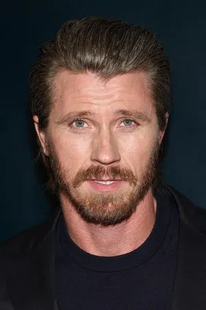
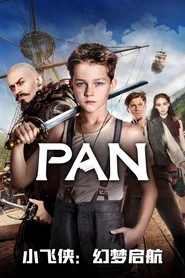
小飞侠：幻梦启航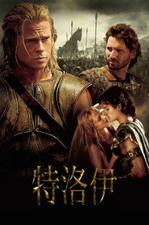
特洛伊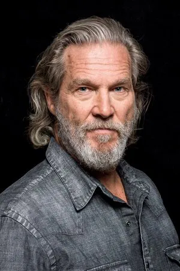
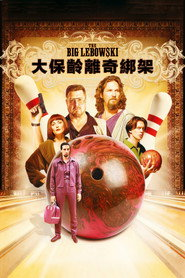
谋杀绿脚趾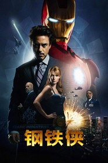
钢铁侠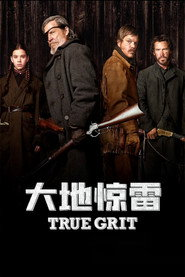
大地惊雷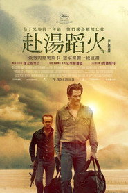
赴汤蹈火短评（轻微剧透）
轻微剧透：真正的转折不在克鲁背叛，在弗林为什么二十年不出手。他在网格里等的不是夺回控制权，而是一个「超出他计划的东西」——他儿子，以及一个叫葵拉的、他没能写出来的程序。科辛斯基把整部片做成了一次工业设计展：所有东西发光，所有线条是直的，唯独葵拉是例外。轻微剧透：结尾两个人骑着光轮驶出边界、阳光落在水面上那一镜，是全片唯一「不为炫技、就是为了好看」的地方。
为什么值得一看
想看工业设计级别的视听、能接受剧情极度简化的人；125 分钟不闷，但别指望人物层次。无血腥画面，儿童观看无碍。内地未映，Disney+ 及其他流媒体可看。看完想继续：《遗落战境》《壮志凌云：独行侠》《电子世界争霸战》(1982)。
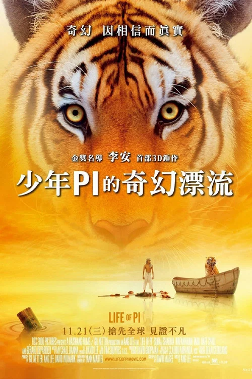
少年派的奇幻漂流 Life of Pi
「没有理查德·帕克，我活不下来。」
剧情梗概
少年派出生在印度一个经营动物园的家庭里，同时信着好几种宗教。父亲决定举家移民加拿大，他们带着动物登上一艘日本货船。跨洋风暴之后，只剩他、一条救生艇，和一只叫理查德·帕克的孟加拉虎。二百二十七天后获救的那个人讲了这个故事；日本调查员上门的时候，他又讲了另一个版本。
亮点
- 李安执导，改编自扬·马特尔的同名小说——出版十余年间一直被认为「不可能拍成电影」。
- 预算 1.2 亿美元，全球票房约 6.09 亿美元；第 85 届奥斯卡十一项提名，拿下最佳导演、最佳摄影、最佳视觉效果、最佳原创配乐四项。
- 苏拉·沙玛第一次演戏，17 岁，从几千人的海选中被挑出来，全片大部分时间在对着空气。
- 海上段落几乎全在台湾台中搭建的水槽里完成，剧组为此造了当时世界上最大的自动造浪池之一。
- 老虎是全 CG，但每一帧的水、光与反射都来自真实拍摄——这也是它不容易像同期电影那样迅速过时的原因。
- 豆瓣 9.1 / 烂番茄 87% / Metacritic 79 / IMDb 7.9：本期华语观众评分最高的一部。
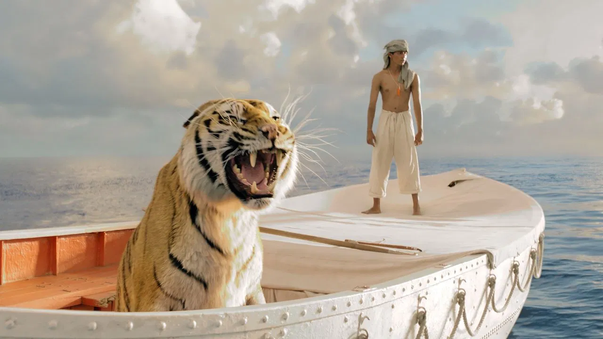
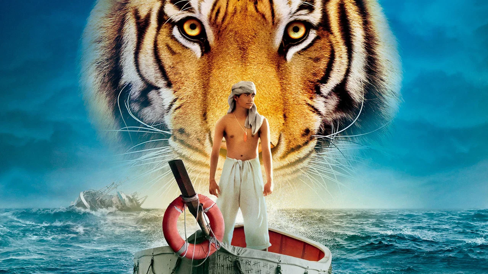
导演与主创 · 他们的历史作品
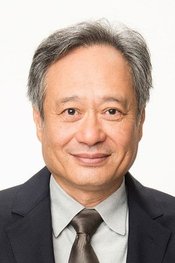
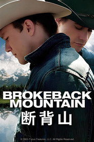
断背山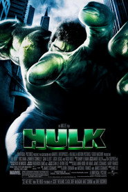
绿巨人浩克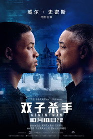
双子杀手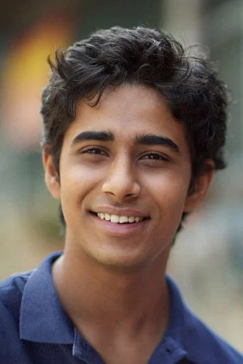
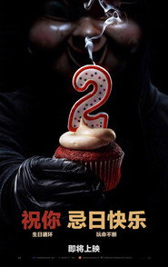
忌日快乐2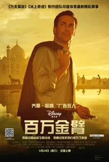
百万金臂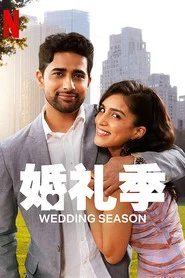
婚礼季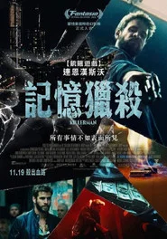
杀手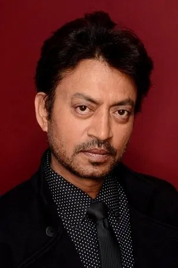
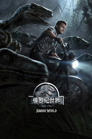
侏罗纪世界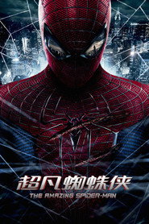
超凡蜘蛛侠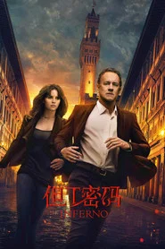
但丁密码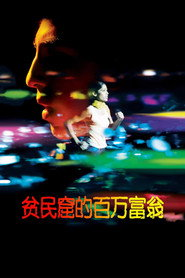
贫民窟的百万富翁短评（轻微剧透）
轻微剧透：真正的转折在最后那场谈话。派把两个版本都讲了，然后问作家「哪个故事更好」——作家选了有老虎的那个，派回了一句「你也是」。李安没给它做判决，只是把「选择」放在「事实」前面，而这个动作正是他前面两个小时一直在排练的。轻微剧透：值得看第二遍，因为前一个版本的每一处都藏着后一个版本的证据。结尾那只老虎连头都不回、直接走进丛林的一镜，是全片最重的一句。
为什么值得一看
想看一部舍得给时间、又从头到尾不疲劳的电影的人；愿意接受「别问哪个是真的」这个前提的观众。127 分钟，画面极美，务必大屏。海难与动物场面可能令部分观众不适，儿童建议陪同观看。内地 2012 年公映过。看完想继续：《断背山》《色，戒》《千与千寻》。
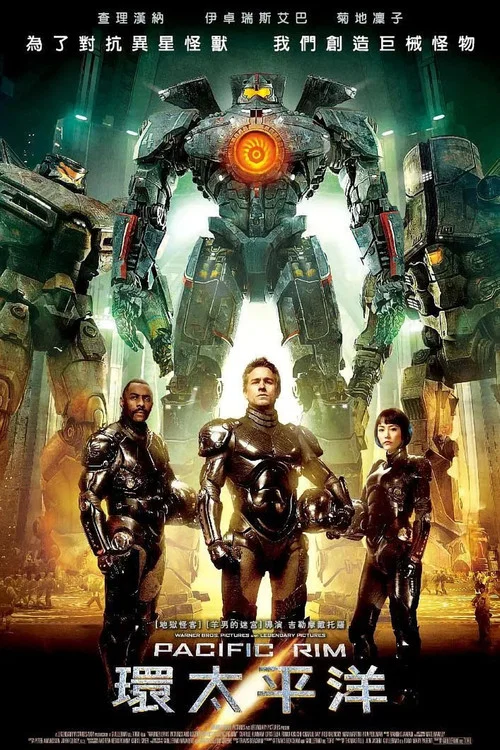
环太平洋 Pacific Rim
「今天，我们要取消世界末日。」
剧情梗概
太平洋底裂开一道通关口，巨兽隔一段时间就上来一次。人类放弃常规武器，改成造巨大的双人驾驶机甲「贼鸥」——两名驾驶员必须共享记忆才能操作。多年下来伤亡越来越多、预算越来越少，将军斯泰克找回归隐的驾驶员罗利，要他和森麻子一起驾驶唯一一台还能打的旧机甲。
亮点
- 吉尔莫·德尔·托罗执导，并与特拉维斯·比彻姆共同编剧；成本 1.9 亿美元，全球票房约 4.11 亿美元。
- 第 86 届奥斯卡最佳视觉效果提名，安妮奖等多个技术奖项。
- 德尔·托罗给每个机甲定了「重量」：转身要花时间，中弹会掉零件，出海面要先考虑脚下的浮筒——这让它不像个塑料模型。
- 这是近年少见的「白天作战的怪兽片」：怪兽与机甲在白天、在大雨里、在海面上打，全部让你看清。
- 它同时是一封写给日本特摄、机甲动画与怪兽电影的情书，只是用北美 A 级制作的成本拍的。
- 豆瓣 7.6 / IMDb 6.9 / 烂番茄 72% / Metacritic 65：典型的「看完想找第二部，别指望剧情」。
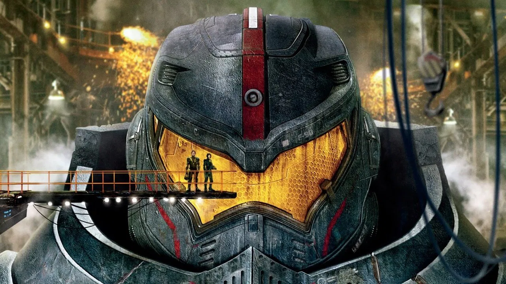
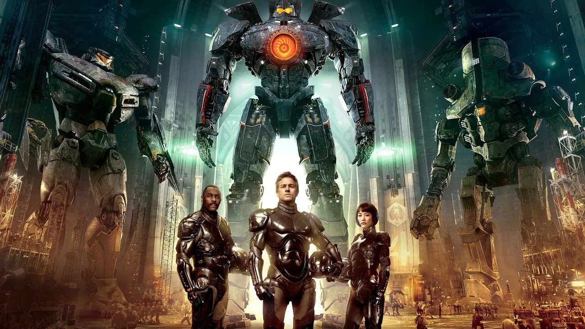
导演与主创 · 他们的历史作品

 水形物语
水形物语 潘神的迷宫
潘神的迷宫 地狱男爵
地狱男爵 环太平洋：雷霆再起
环太平洋：雷霆再起短评（轻微剧透）
轻微剧透：真正的转折在两人第一次完成「漂移」之后——共享记忆这件事把一部纯机甲片变成了另一种东西：它真正的题目是「把自己最深的东西给另一个人看」。德尔·托罗很清楚自己在拍什么，也没给这个题目留太多空间，但它确实存在。轻微剧透：结尾主动炸掉通关口、跳进虚空那一段，是全片唯一一次承认自己其实是个童话。
为什么值得一看
想看最大号的机甲和最大号的怪兽在最大号的屏幕上对打的人；能接受剧情简单、台词偶有中二、131 分钟全在打斗的观众。暴力是机甲片那一档，几乎无人类血腥。内地 2013-07-31 公映过。看完想继续：《环太平洋：雷霆再起》《水形物语》《哥斯拉-1.0》。
地心引力 Gravity
「别松手。」
剧情梗概
一次常规的太空行走中，休斯敦传来「碎片接近、立刻返回」的警告。这次任务上有一位第一次飞天的医学工程师瑞恩·斯通，和一位即将退休、把这次当最后一次兜风的资深航天员马特。碎片扫过之后通讯中断、飞船报废，只剩她一个人拴在空间站的残骸外面，只能一步一步往前挪到另一个站去。
亮点
- 阿方索·卡隆自编自导自制片，剧本与儿子霍纳斯共同写完；预算 1 亿美元，全球票房约 7.23 亿美元。
- 第 86 届奥斯卡十项提名、拿下七项：最佳导演、最佳摄影、最佳剪辑、最佳视觉效果、最佳原创配乐、最佳音效剪辑、最佳音效混合。
- 桑德拉·布洛克大部分时间被固定在机械臂驱动的台车上，周围并没有真的太空——每一个动作都要提前算好。
- 演员脸上的环境光来自由数万颗 LED 组成的「灯箱」，屏幕上播放的就是 CG 地球，所以反光永远是对的。
- 整个项目花了四年多，其中大部分时间花在让导演「能真的用虚拟相机走进场景里」这件事上。
- 豆瓣 8.0 / 烂番茄 96% / Metacritic 96 / IMDb 7.7：**Metacritic 96 是本期专业评分最高的一部**。
导演与主创 · 他们的历史作品
短评（轻微剧透）
轻微剧透：真正的转折在她终于钻进舱内、脱下航天服从一个胎姿浮起来的那几分钟——那是全片唯一一次「安全」，也是她在一艘别人的飞船里重新变成一个人的过程。卡隆拍的从来不是太空求生，是「失去所有支点之后，一个人怎么把自己重新装起来」。轻微剧透：最后落地站在岸边、一步一步握住栏杆的那几个动作，是全片唯一一段不需要任何台词的解释。
为什么值得一看
想看一次「91 分钟手心出汗」的人；能接受单主演、场景单一、几乎没有解释性台词的观众。强烈建议大屏 + 尽可能好的音响。对旋转镜头 / 3D 眩晕敏感的观众需留意。内地 2013-11-19 公映过。看完想继续：《星际穿越》《月球》《火星救援》。
奇幻森林 The Jungle Book
「丛林的法则，谁也逃不掉。」
剧情梗概
被狼群养大的人类男孩毛克利，被黑豹巴希拉从老虎谢利·可汗的威胁下带往人类村庄。路上他见过会把他当猎物的巨蟒、像庙一样的废墟，也重新学会自己和这片林子的关系。谢利·可汗放话：只要他留在丛林里，就要他的命。而森林里的大火正在按季节往上走。
亮点
- 乔恩·费儒执导，迪士尼对自己 1967 年动画《森林王子》的真人重制版。
- 预算 1.75 亿美元，全球票房约 9.66 亿美元；第 89 届奥斯卡拿下最佳视觉效果。
- 尼尔·塞西是全片唯一出现在实景里的演员，所有动物与环境都是 CG。
- 每一只动物的体重感、皮肤下垂与肌肉走向都参考真实解剖；导演的要求是「它们必须站得住」，不能只是一个漂亮的皮套。
- 它同时取自吉卜林的原著与 1967 年的动画片：留下最经典的几首歌，其余在丛林规则里重讲一遍。
- 豆瓣 7.9 / 烂番茄 95% / Metacritic 77 / IMDb 7.4：视听几乎无争议，分歧主要在「够不够黑」。
导演与主创 · 他们的历史作品
 蜘蛛侠：英雄归来
蜘蛛侠：英雄归来 蜘蛛侠：英雄无归
蜘蛛侠：英雄无归 辛德勒的名单
辛德勒的名单 禁闭岛
禁闭岛短评（轻微剧透）
轻微剧透：真正的转折在毛克利决定跑回丛林那一趟。所有人都在告诉他「你是人，人就该去人的村子」，而他的答案是：我可以用人的方式，做丛林里没人做得到的事。费儒往这个一百多年前的老故事里塞进的分歧是——工具与火到底算不算一个人的「武器」。轻微剧透：最后那场火不是单纯的动作高潮，它就是他对「不再躲在被保护的位置上」的回答：他学会用火，也因此改变了他和谢利·可汗之间的最后关系。
为什么值得一看
想看「全 CG 动物 + 一个真人小孩」这件事是怎么做成的人；愿意在视觉迷人的前提下接受故事偏传统的观众。106 分钟，节奏干净。动物追捕场面略紧张，低龄儿童建议陪同。内地 2016-04-15 公映过。看完想继续：《钢铁侠》《落魄大厨》《狮子王》(2019)。
头号玩家 Ready Player One
「这里唯一限制你的，是你自己的想象力。」
剧情梗概
2045 年，现实是一座叠起来的贫民窟，所有人戴上头显躲进名叫「绿洲」的虚拟世界。创造者哈利迪去世前留下遗嘱：找到藏在里面的三把彩蛋钥匙的人，继承全部股权与这个世界。五年没人成功。而这一天，一个住在集装箱里的少年帕西法尔打开了第一扇门。
亮点
- 史蒂文·斯皮尔伯格执导，改编自恩斯特·克莱恩 2011 年的同名小说（作者本人参与了剧本）。
- 预算 1.55 亿美元，全球票房约 5.82 亿美元；中国内地 2018-03-30 公映，票房逾 10 亿元人民币。
- 第 91 届奥斯卡最佳视觉效果提名。
- 版权清理是这部片最贵、最麻烦的部分之一——你能想到的那些角色与道具，几乎一个个都要谈。
- 绿洲里的场景是完整的 CG，但游戏分身的表演全部来自真人表演捕捉：屏幕上看着像动画，底下其实是演员。
- 豆瓣 8.7 / 烂番茄 72% / Metacritic 64 / IMDb 7.5：**典型的「华语观众远高于欧美影评」**。
导演与主创 · 他们的历史作品
辛德勒的名单 X战警：天启
X战警：天启短评（轻微剧透）
轻微剧透：真正的转折在哈利迪为什么不给任何提示——他设计的题目从来不是「你记不记得」，而是「你愿不愿意慢下来、愿意输、愿意回到一个人做某件事的初衷」。斯皮尔伯格把最后三十分钟做成了一次反高潮：赢下整个绿洲之后的第一件事，是每周关掉它两天。轻微剧透：这句话在 2026 年听起来已经不像当年那么新鲜，但它依然是所有人都能听进去的一句。
为什么值得一看
想在爆米花片里看到「我们从小在录像带里捞出来的那些东西」的人；能接受剧情直白、彩蛋多到不像悬疑片的观众。140 分钟偏长但几乎不冷场。赛车段落有零碎血腥，儿童观看基本无碍。内地 2018 年公映过，流媒体可看。看完想继续：《人工智能》《侏罗纪公园》《电子世界争霸战》(1982)。
流浪地球 The Wandering Earth
「我们的英雄，是这颗地球本身。」
剧情梗概
太阳即将急速膨胀吞噬整个太阳系，人类启动「流浪地球」计划：在地表建一万座行星发动机，把地球整体推去比邻星。2075 年，地球借木星引力加速时被捕获，数千座发动机停机，地壳开始解体。地下城里长大的刘启带着妹妹逃上地表，被征用进一支运送火石的救援队；而在空间站上的父亲刘培强，手握另一个决定。
亮点
- 郭帆执导，改编自刘慈欣的同名短篇（原著作者任监制）。制作周期四年，参与人数约七千人，道具一万件。
- 成本约 3 亿人民币，最终内地票房约 46.9 亿人民币（含重映），是当年春节档冠军、国产科幻的一个分界点。
- 全片约七成半的特效由中国团队完成；导演郭帆最初只是被定给《流浪地球》的几位候选之一。
- 美术团队三百多人、耗时十五个月，产出三千多张概念图与八千多张分镜——地下城、行星发动机、运载车都先有图纸再开工。
- 吴京原本只打算客串两天，最后不但留了三十多天，还自带资金进组出任出品人。
- 豆瓣 7.9 / 猫眼 9.2，但 IMDb 只有 5.9、烂番茄 70%、Metacritic 57：**本期口碑落差最大的一部**，值得一说。
导演与主创 · 他们的历史作品
短评（轻微剧透）
轻微剧透：真正的转折不在木星能不能点着，在那个决策本身。在此之前所有片都在问「怎么活下去」，这部片问的是「谁被留下」——MOSS 在 0.42 秒内就算出了全部结果，它选的是带走文明的受精卵；刘培强选的是另一条。它把「带着家一起走」从一句说法，做成了具体的选择题。轻微剧透：结局里父亲主动驶向火焰的那种干脆，正是这部片最不像好莱坞的地方。
为什么值得一看
想知道「国产重工业科幻这七个字是怎么买的单」的人；能接受人物带着舞台感的夸张表演、台词偏直给的观众。125 分钟。含灾难、牺牲与亲人离世场面，建议小学以上观看。内地各大平台可看（部分有 IMAX / 加长版本）。看完想继续：《流浪地球2》《疯狂的外星人》《寂静之地》。
阿丽塔：战斗天使 Alita: Battle Angel
「我不管这座城规没规矩，我有我的。」
剧情梗概
二十六世纪的钢铁城，机械医生依德在废料堆里捡到一颗还活着的人脑与半截机械残躯，把它救回来，取名阿丽塔。她重新站起来、重新学会走路，也丢失了全部过去。她在街头认识了做买卖的雨果，在一次次与猎手们的厮杀里，掉落的记忆开始往上冒——关于一套她曾经十分熟悉的战技，也关于天空那座名叫撒冷的城市。
亮点
- 罗伯特·罗德里格兹执导，詹姆斯·卡梅隆制片并与他人共同编剧；卡梅隆自 2000 年代初就握着《铳梦》的改编权，写了十余年剧本。
- 预算 1.7 亿美元，全球票房约 4.05 亿美元；中国内地 2019-02-22 公映，票房近 9 亿元人民币，反超北美。
- 阿丽塔由罗莎·萨拉查表演捕捉生成，是一具完全 CG 的身体；为了让「她不是人」这件事成立，同时又不让人觉得别扭，维塔工作室在眼睛与皮肤上花了整条项目的绝大部分时间。
- 机动球那段是全片最贵也最完整的一段 CG：它原本在原著里就长这样，二十年里没有人敢拍。
- 改编把一个相当黑暗的反乌托邦原作往「我们能看」的方向挪了不少，这也是原著党最不满的一点。
- 豆瓣 7.6 / IMDb 7.3，但烂番茄只有 59%、Metacritic 53——同一批观众在爆米花指数上却给了 94%：典型的「影评人与观众完全不在同一个频道」。
导演与主创 · 他们的历史作品
 分歧者2：绝地反击
分歧者2：绝地反击 泰山归来：险战丛林
泰山归来：险战丛林短评（轻微剧透）
轻微剧透：真正的转折在阿丽塔把自己心脏掏出来递过去的那一场。她在这个剧本里最常被批评的是「没有污点」，但那一场把她说清楚了：她不是学会了什么，她是从一开始就没有「舍不得」这个概念。罗德里格兹把这个赛博朋克设定做成了一次很直白的成长弧度。轻微剧透：结尾给了一个巨大的续集钩子，而续集至今没有开机——这也是它留下来最让人遗憾的一件事。
为什么值得一看
想看「全 CG 主角怎么在人类演员中间站得住」的人；能接受剧情套路、台词直给、以及结局明显是半部片的观众。122 分钟，机动球段落非常过瘾。含机械身体损伤与较为风格化的暴力画面，建议小学以上观看。内地 2019 年公映过，流媒体可看。看完想继续：《铳梦》《攻壳机动队》《银翼杀手2049》。
1917 1917
「你走到那里之前，别停下来。」
剧情梗概
1917 年春天，西线的英军准备发动一次看起来稳赢的进攻，而德军刚刚撤到了一条新防线的后面。两名年轻士兵威廉与汤姆必须在天黑前越过无人区，把一封取消进攻的命令送到前线德文郡团——那里有一千六百人，其中包括汤姆的亲哥哥。他们只有几小时。
亮点
- 萨姆·门德斯自编自导自制片，灵感来自他祖父在一战里当传令兵的经历。
- 预算约 9500 万美元，全球票房约 3.85 亿美元；第 92 届奥斯卡十项提名，拿下最佳摄影、最佳视觉效果、最佳音效混合三项，另获金球奖最佳剧情片与最佳导演。
- 摄影罗杰·狄金斯。全片由多个长镜头拼接，剪接点藏在穿门、过暗处与镜头划过物体的瞬间——看着像一镜到底，实际是几十次重新布光与重排调度换来的。
- 拍摄前排练了整整半年：所有走位、所有爆炸、所有配角入场都要精确到秒，因为一次失误整条作废。
- 它几乎没给历史背景，也不解释双方是谁——两个人的行程有多长，观众知道的信息就有多少。
- 豆瓣 8.5 / IMDb 8.2 / 烂番茄 89% / Metacritic 78：本期口碑最齐整的一部。
导演与主创 · 他们的历史作品
 兰开斯特之王
兰开斯特之王短评（轻微剧透）
轻微剧透：真正的转折在汤姆不再出现的那一刻之后。门德斯很清楚这是一部「结构先行」的片——没有前中型任务介绍，没有人物往事，镜头只是跟着这两个人一直走。也正因为如此，那次突然的中断才有分量：这部片从这一秒起交出的不是冒险，是「你必须继续走」这件事本身。轻微剧透：最后他坐在树下拿出的那两张照片，是全片唯一一次让观众喘气，也是全片唯一一次解释他为什么走得下去。
为什么值得一看
想看「电影工艺能压到什么程度」的人；能接受几乎无背景解释、以时间为唯一驱动力的观众。119 分钟，极其连贯，不建议中途停。战场画面写实、有尸体与流血，建议成年观看。内地未映，流媒体可看。看完想继续：《拯救大兵瑞恩》《漫长的婚约》《敦刻尔克》。